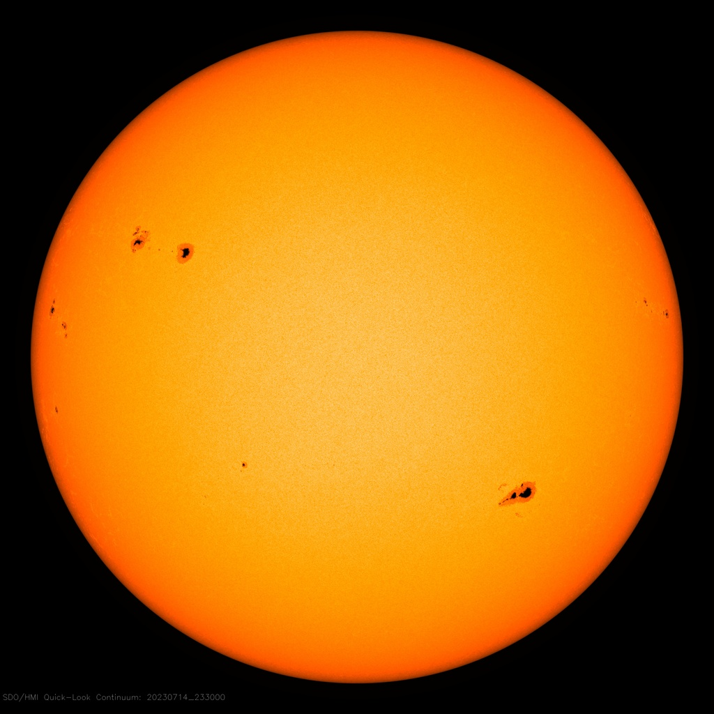
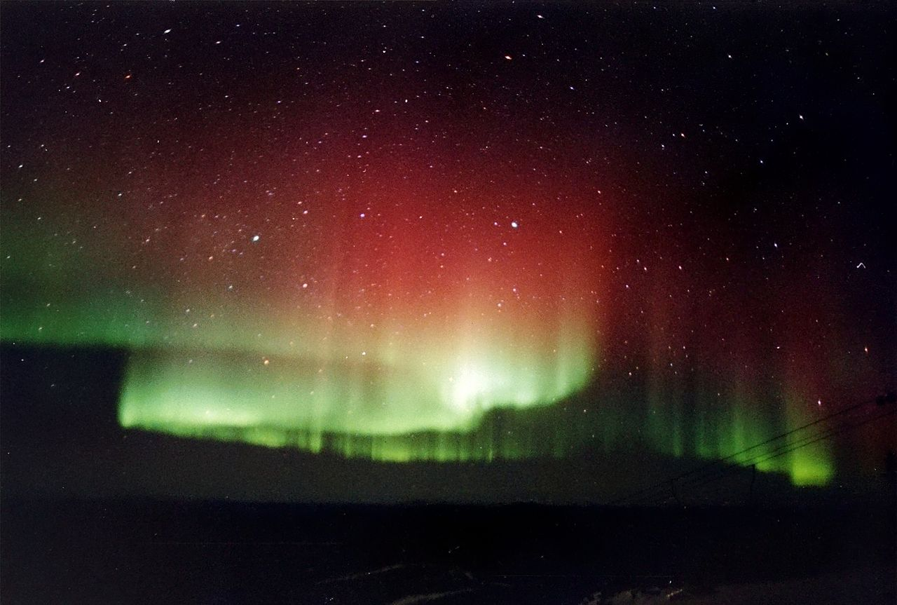
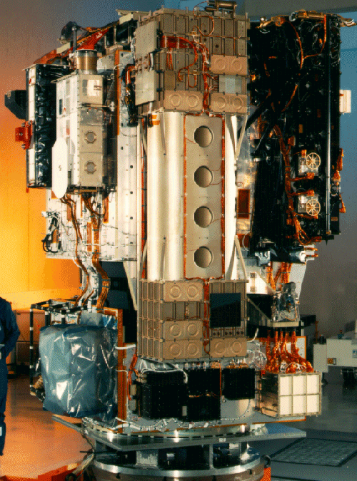
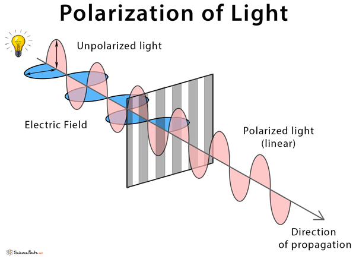
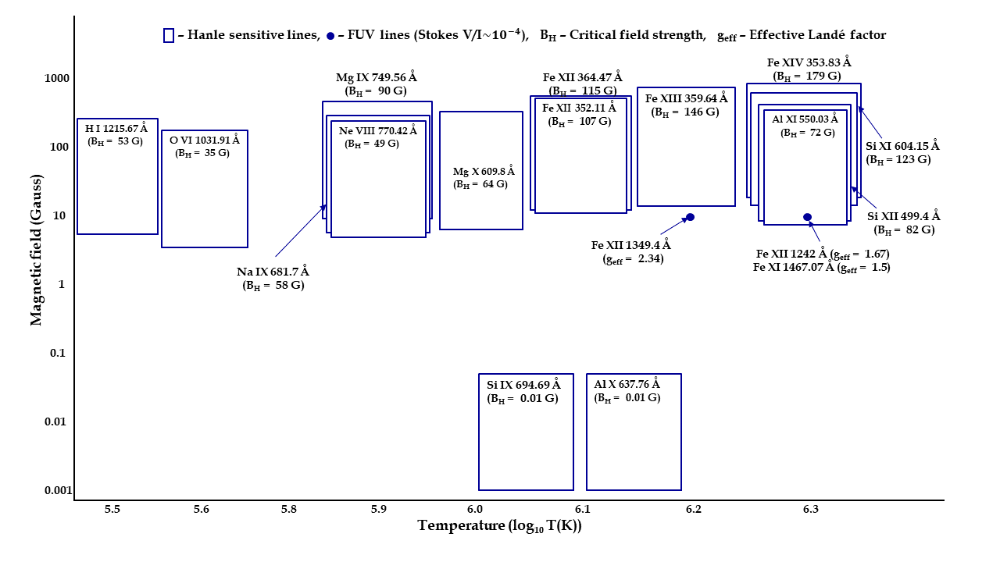

Revealing the mysteries of the Sun's coronal Magnetic Field using high energy spectropolarimetry
This article explains the importance of the Sun’s coronal magnetic field. In view of this, this article elaborates the capability of spectral lines emitted in the extreme-ultraviolet and delineates the promising technique of the Hanle effect in deriving the coronal magnetic field.
Our Sun has one of the most complex magnetic systems, but at the same time it is also the most accessible star to study and model through observations via space-based and ground-based solar telescopes. Being the nearest star to us, the Sun acts as a reference for most of the stars in the universe in terms of luminosity, radius, temperature etc. The part/surface of the Sun that we see from the Earth is called the photosphere, which is actually a giant ball of hot plasma. Above the Sun’s photosphere lies the chromosphere, which is a thin transition region and the extensive corona (corona means “crown”). During the full solar eclipses, the crown-shape of the corona is highly conspicuous from the Earth. However, direct viewing is extremely hazardous to the eyes and therefore, should only be observed using eclipse glasses.

Figure 1: The black spots are called the sunspots which were observed on July 14, 2023 using the instrument Helioseismic and Magnetic Imager (HMI) on board the Solar Dynamics Observatory (SDO) [Credit: SDO]
Presently, the Sun is undergoing the phase of solar maxima and therefore prominent features like sunspots can be seen (Figure 1). Giant explosions of energy and particles are commonly detected during this phase such as Solar flares and Coronal Mass Ejections (CME). The highly energetic particles propagate towards the Earth and, when they interact with the Earth’s outer atmosphere, result in the formation of the beautiful Northern lights, sometimes, also named as aurora borealis (Figure 2). Usually, high-latitude places, like Norway and Iceland, witness the aurorae. But recently, there was a rare sighting of the aurorae at the Indian Astronomical Observatory, Hanle (visit here), around 23 April 2023, which occurred due to a powerful CME that hit the Earth. These energetic events are strongly driven by the coronal magnetic field, which also affects the Space weather. Therefore, it is important to measure the magnetic field vector and its evolution in the solar atmosphere, especially in the solar corona and beyond.

Figure 2: Aurorae captured at Fairbanks, Alaska [Credit: Wikipedia]
There is also an open question in solar physics: why is the solar corona, despite being the outermost layer, hotter than the other inner layers of the Sun? The answer(s) to this question is (are) yet to be determined. One of the potential explanations may be related to the magnetic field. However, there are very few attempts till today to directly measure the magnetic field at the solar corona (Raouafi et al. 1999 and 2002). Although the radiation from the Sun’s corona constitutes only 1% of the total radiation of the Sun, there is a treasure of highly ionized wavelengths which originate from the corona (Curdt et al. 2004).
Therefore, scientists believe that building instruments, to observe the Sun at shorter wavelengths below 1200 Å, will help in revealing the secrets of those uncharted regions which have remained hidden in these wavelengths. Extreme ultraviolet (EUV; 100 to 1200 Å) and far-ultraviolet (FUV; 1200 to 2000 Å) radiation do not reach us on the Earth but constitute a major part of the coronal emissions. Therefore, we need to send instruments to space for observing the Sun at these shorter wavelengths.
Over the past few decades, there have been significant advances in EUV solar astronomy, thanks in part to the development of new observational techniques and instrumentation. One of the most important instruments for EUV solar astronomy is the Extreme Ultraviolet Imaging Telescope (EIT), which was launched aboard the Solar and Heliospheric Observatory (SOHO) spacecraft in 1995. The EIT has provided high-resolution images of the Sun’s corona and has allowed astronomers to study the dynamics of the solar wind and the formation of CMEs. Another important development in EUV solar astronomy has been the use of spectroscopy to study the Sun’s EUV emissions. Spectroscopy allows astronomers to measure the wavelengths of light emitted by the Sun and to identify the elements and ions that are present in the Sun’s atmosphere. High-resolution spectroscopic observations by instruments such as, Solar Ultraviolet Measurements of Emitted radiation (SUMER) and the Coronal Diagnostic Spectrometer (CDS) onboard SOHO, have shown a treasure of spectral lines in EUV and FUV which are emitted by the corona. This triggered our interest in studying the magnetic sensitivity of the lines, in terms of the Zeeman effect (interested readers may refer to page 49 of my article) and the Hanle effect, to probe the coronal magnetic field.

Figure 3: Pre-launch image of Solar Ultraviolet Measurements of Emitted radiation (SUMER) instrument on board the ESA/NASA spacecraft Solar and Heliospheric Observatory (SOHO). [Credit: Max Planck Institute for Solar System Research]
Before understanding the Hanle effect, we must understand the polarization of light. Light consists of oscillating electric field vectors. When the electric field vector oscillates in all directions in a plane perpendicular to the direction of propagation, such type of light is known as unpolarized light. However, when unpolarized light passes through a filter as shown in Figure 4, the oscillations are confined along one line only. This phenomenon is known as polarization of light, or light is said to be linearly polarized. Now the Hanle effect occurs when, in the presence of an external weak magnetic field, there is a change in this linear polarization.

Figure 4: Unpolarized light becomes polarized after passing through a filter. [Credit: sciencefacts.net]
From our recent study, it is found that the circular polarization (refers to electric field oscillation in a circular path) signal due to the Zeeman effect is very poor (in the order of 10-4 to 10-5) and is beyond the detection capability of the currently available instruments. Therefore, we studied and identified the spectral lines which are sensitive to the Hanle effect. Due to the stronger linear polarization signals in the order of 10-1 to 10-3, the Hanle sensitive lines are capable of diagnosing the coronal magnetic field. In order to identify these lines, we estimated essential parameters, such as, the lifetime of the upper atomic level and the polarizability coefficients (defined as the fraction of the linear polarization produced from the incoming light). Each of these calculated parameters have a characteristic value associated with each of the Hanle sensitive lines. Based on these parameters, we sorted out only those lines which are Hanle sensitive and have enough intensity so as to be detected by the future instruments in the weak coronal magnetic field strengths (~ 1 to 100 Gauss). Figure 5 summarizes the magnetic sensitivity of the Hanle sensitive lines which can be used to calculate the coronal magnetic fields.

Figure 5: Graphical representation of magnetic sensitivity of the spectral lines in the domain of Hanle effect. The domains are shown in rectangular boxes, each of which covers an approximate temperature range along the X-axis and magnetic field strength from 0.1 BH to 5 BH along the Y-axis (Not to be scaled). The middle of each rectangular box along the X-axis represents the peak line formation temperature. FUV spectral lines, having best estimated Stokes V signal, are shown using solid circles at a coronal field of 10 Gauss. [Credit: this work]
There are many challenges in building a space-based instrument which need to be addressed with caution. Our study has helped in narrowing down the huge data set to only those magnetically sensitive lines which exist in the typical coronal temperatures of 0.3 to 4 million Kelvin. Most importantly, our work has helped in advancing towards the development of a spectropolarimeter in the EUV and FUV wavelengths, which will allow the entire solar community to tap into many of the unanswered questions about the Sun.
Original paper: Spectral Lines in FUV and EUV for Diagnosing Coronal Magnetic Field
First Author: Raveena Khan
Co-authors: K. Nagaraju
First author’s Institution: Indian Institute of Astrophysics, India